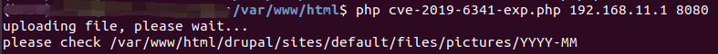
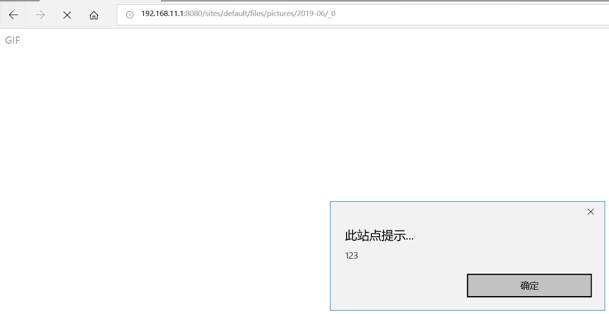

Drupal Cross-Site Scripting by File Upload (CVE-2019-6341)¶
Drupal is a free and open-source web content management framework written in PHP.
A cross-site scripting (XSS) vulnerability exists in Drupal 7.x before 7.65, Drupal 8.x before 8.5.14 and 8.6.x before 8.6.13. The vulnerability is caused by improper handling of file uploads in the file module or subsystem, which can lead to stored XSS attacks.
References:
- https://www.drupal.org/sa-core-2019-004
- https://www.zerodayinitiative.com/blog/2019/4/11/a-series-of-unfortunate-images-drupal-1-click-to-rce-exploit-chain-detailed
- https://paper.seebug.org/897/
Environment Setup¶
Execute the following command to start a vulnerable Drupal 8.5.0 server:
docker compose up -d
After the server is started, visit http://your-ip:8080/ to access the Drupal installation page. Follow the default configuration steps to complete the installation. Since there is no MySQL environment, you can choose SQLite as the database.
Vulnerability Reproduction¶
This vulnerability exploits a flaw in Drupal's file module that allows uploading a specially crafted file without extension. The file appears to be an image but actually contains HTML code with embedded JavaScript. When other users visit the link to this file, the XSS payload will be executed.
By default, Drupal stores uploaded images in the /sites/default/files/pictures/<YYYY-MM>/ directory.
To exploit the vulnerability, use the PoC script from thezdi/PoC to create and upload a malicious GIF file. Execute the following command, where the first argument is the target IP and the second is the target port:
php cve-2019-6341-exp.php 192.168.11.1 8080

After successful upload, visiting the image location will trigger the XSS vulnerability:

Note:
- Chrome and Firefox browsers have built-in XSS filters, so it's recommended to use Edge or IE browsers for testing.
- The uploaded image name ends with "_0" due to Drupal's rule mechanism. For more details, see Drupal 1-click to RCE Analysis
- The chain of this bug and CVE-2019-6339, which can lead to remote code execution by 1 click